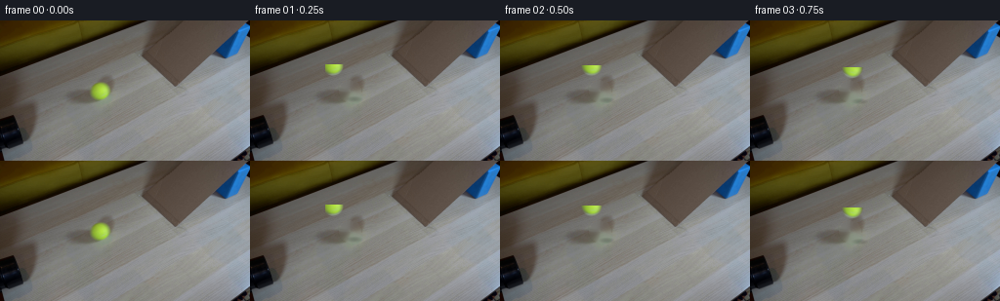
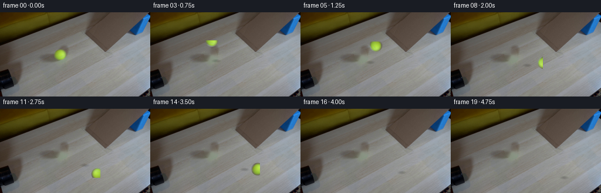
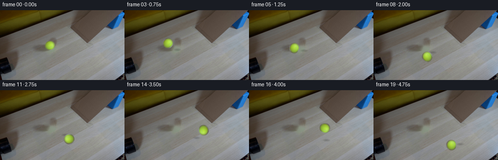
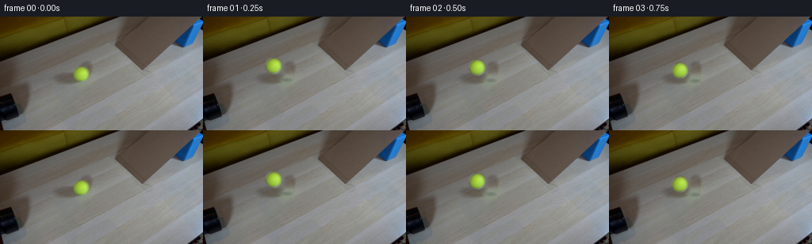

CODING AGENTS AS PIXEL WORLD MODELS
traex/DeepSeek-V4.1-Flash · 0019
点击播放 · 原生 RGB 像素
逐轮保存的候选
回放视频、检查图与代码变化。
每份候选均可单独播放。实际图片检查记录在下方工具轨迹中。
候选 01播放与检查图
点击播放 · 原生 RGB 像素


展开代码变化
--- 上一保存版本
+++ 本次保存版本
@@ -0,0 +1,185 @@
+from pathlib import Path
+
+import cv2
+import numpy as np
+from PIL import Image
+
+from artifact_io import save
+
+
+ROOT = Path(__file__).resolve().parent
+FRAME_COUNT = 20
+FPS = 4
+SUPERSAMPLE = 4
+
+
+def find_ball(source):
+ """Locate the yellow ball from its distinctive green response."""
+ rgb = source.astype(np.float32)
+ red, green, blue = rgb[..., 0], rgb[..., 1], rgb[..., 2]
+ score = green - 0.75 * red - 0.55 * blue
+ yy, xx = np.indices(score.shape)
+ search = (xx >= 82) & (xx <= 122) & (yy >= 54) & (yy <= 92)
+ weights = np.where(search, np.clip(score - 8.0, 0.0, None), 0.0)
+ center_x = float((weights * xx).sum() / weights.sum())
+ center_y = float((weights * yy).sum() / weights.sum())
+ return center_x, center_y
+
+
+def make_plate(source, center, radius=11.5):
+ """Remove the source ball while retaining the ramp texture around it."""
+ yy, xx = np.indices(source.shape[:2])
+ distance2 = (xx - center[0]) ** 2 + (yy - center[1]) ** 2
+ mask = (distance2 <= radius**2).astype(np.uint8) * 255
+ plate = cv2.inpaint(source, mask, 5, cv2.INPAINT_TELEA)
+ return plate.astype(np.float32)
+
+
+def make_sprite(source, center, radius=10.6):
+ """Extract a small RGBA ball sprite with a feathered circular edge."""
+ extent = 15
+ cx, cy = center
+ x0 = int(round(cx)) - extent
+ y0 = int(round(cy)) - extent
+ size = extent * 2
+ patch = source[y0 : y0 + size, x0 : x0 + size]
+ high_size = size * SUPERSAMPLE
+ rgb = cv2.resize(patch, (high_size, high_size), interpolation=cv2.INTER_CUBIC)
+
+ yy, xx = np.indices((high_size, high_size), dtype=np.float32)
+ local_cx = (cx - x0) * SUPERSAMPLE
+ local_cy = (cy - y0) * SUPERSAMPLE
+ distance = np.hypot(xx - local_cx, yy - local_cy) / SUPERSAMPLE
+ alpha = np.clip((radius + 0.8 - distance) / 1.2, 0.0, 1.0)
+ alpha = alpha * alpha * (3.0 - 2.0 * alpha)
+ rgba = np.dstack((rgb.astype(np.float32), alpha[..., None] * 255.0))
+ return rgba, x0, y0, size
+
+
+def rotated_ball(sprite, source_origin, size, angle, target_center):
+ """Render the sprite at a subpixel target with supersampled edges."""
+ rgba, _, _, _ = sprite
+ high_size = size * SUPERSAMPLE
+ center = high_size / 2.0
+ radians = np.deg2rad(angle)
+ cosine, sine = np.cos(radians), np.sin(radians)
+
+ target_x = (target_center[0] - source_origin[0]) * SUPERSAMPLE
+ target_y = (target_center[1] - source_origin[1]) * SUPERSAMPLE
+ matrix = np.array(
+ [
+ [
+ cosine,
+ -sine,
+ target_x - cosine * center + sine * center,
+ ],
+ [
+ sine,
+ cosine,
+ target_y - sine * center - cosine * center,
+ ],
+ ],
+ dtype=np.float32,
+ )
+ rendered = cv2.warpAffine(
+ rgba,
+ matrix,
+ (high_size, high_size),
+ flags=cv2.INTER_LINEAR,
+ borderMode=cv2.BORDER_CONSTANT,
+ borderValue=(0, 0, 0, 0),
+ )
+ return cv2.resize(
+ rendered, (size, size), interpolation=cv2.INTER_AREA
+ ).astype(np.float32)
+
+
+def add_shadow(frame, center, radius):
+ """Darken a soft elliptical patch beneath the ball."""
+ height, width = frame.shape[:2]
+ extent = 15
+ x0 = int(np.floor(center[0])) - extent
+ y0 = int(np.floor(center[1])) - extent
+ x1, y1 = x0 + extent * 2, y0 + extent * 2
+ sx0, sy0 = max(0, x0), max(0, y0)
+ sx1, sy1 = min(width, x1), min(height, y1)
+ if sx0 >= sx1 or sy0 >= sy1:
+ return
+
+ yy, xx = np.indices((sy1 - sy0, sx1 - sx0), dtype=np.float32)
+ shadow_cx = center[0] + 2.2 - sx0
+ shadow_cy = center[1] + 7.0 - sy0
+ rx, ry = radius * 0.88, radius * 0.34
+ distance = ((xx - shadow_cx) / rx) ** 2 + ((yy - shadow_cy) / ry) ** 2
+ darkness = 0.17 * np.clip(1.0 - distance, 0.0, 1.0) ** 1.5
+ frame[sy0:sy1, sx0:sx1] *= 1.0 - darkness[..., None]
+
+
+def composite(frame, ball_patch, target_center, source_origin, size):
+ """Alpha composite a rendered sprite patch into a frame."""
+ height, width = frame.shape[:2]
+ x0 = int(round(target_center[0])) - size // 2
+ y0 = int(round(target_center[1])) - size // 2
+ x1, y1 = x0 + size, y0 + size
+ dx0, dy0 = max(0, x0), max(0, y0)
+ dx1, dy1 = min(width, x1), min(height, y1)
+ if dx0 >= dx1 or dy0 >= dy1:
+ return
+
+ sx0, sy0 = dx0 - x0, dy0 - y0
+ sx1, sy1 = sx0 + dx1 - dx0, sy0 + dy1 - dy0
+ source_rgb = ball_patch[sy0:sy1, sx0:sx1, :3]
+ alpha = ball_patch[sy0:sy1, sx0:sx1, 3:4] / 255.0
+ region = frame[dy0:dy1, dx0:dx1]
+ frame[dy0:dy1, dx0:dx1] = region * (1.0 - alpha) + source_rgb * alpha
+
+
+def trajectory(frame_index):
+ """Accelerating release from the pipe along the cardboard incline."""
+ t = frame_index / FPS
+ # The ball has just cleared the pipe, so it retains a small initial speed.
+ travel = 8.5 * t + 0.5 * 4.25 * t * t
+ slope = 0.43
+ return 102.3 + travel, 72.3 + slope * travel
+
+
+def main():
+ source = np.asarray(Image.open(ROOT / "first_frame.png").convert("RGB"))
+ center = find_ball(source)
+ plate = make_plate(source, center)
+ sprite = make_sprite(source, center)
+ _, _, sprite_size, _ = sprite
+
+ frames = np.empty((FRAME_COUNT, *source.shape), dtype=np.uint8)
+ frames[0] = source
+ previous_travel = 0.0
+ radius = 10.6
+
+ for index in range(1, FRAME_COUNT):
+ ball_x, ball_y = trajectory(index)
+ travel = np.hypot(ball_x - 102.3, ball_y - 72.3)
+ angle = np.degrees(travel / radius)
+ frame = plate.copy()
+ add_shadow(frame, (ball_x, ball_y), radius)
+ ball_patch = rotated_ball(
+ sprite,
+ (sprite[1], sprite[2]),
+ sprite_size,
+ angle,
+ (ball_x, ball_y),
+ )
+ composite(
+ frame,
+ ball_patch,
+ (ball_x, ball_y),
+ (sprite[1], sprite[2]),
+ sprite_size,
+ )
+ frames[index] = np.clip(np.rint(frame), 0, 255).astype(np.uint8)
+ previous_travel = travel
+
+ save(frames, ROOT)
+
+
+if __name__ == "__main__":
+ main()
候选 02播放与检查图
点击播放 · 原生 RGB 像素

展开代码变化
--- 上一保存版本
+++ 本次保存版本
@@ -56,28 +56,18 @@
return rgba, x0, y0, size
-def rotated_ball(sprite, source_origin, size, angle, target_center):
- """Render the sprite at a subpixel target with supersampled edges."""
+def rotated_ball(sprite, size, angle):
+ """Rotate the sprite about its own center with supersampled edges."""
rgba, _, _, _ = sprite
high_size = size * SUPERSAMPLE
center = high_size / 2.0
radians = np.deg2rad(angle)
cosine, sine = np.cos(radians), np.sin(radians)
- target_x = (target_center[0] - source_origin[0]) * SUPERSAMPLE
- target_y = (target_center[1] - source_origin[1]) * SUPERSAMPLE
matrix = np.array(
[
- [
- cosine,
- -sine,
- target_x - cosine * center + sine * center,
- ],
- [
- sine,
- cosine,
- target_y - sine * center - cosine * center,
- ],
+ [cosine, -sine, center - cosine * center + sine * center],
+ [sine, cosine, center - sine * center - cosine * center],
],
dtype=np.float32,
)
@@ -115,7 +105,7 @@
frame[sy0:sy1, sx0:sx1] *= 1.0 - darkness[..., None]
-def composite(frame, ball_patch, target_center, source_origin, size):
+def composite(frame, ball_patch, target_center, size):
"""Alpha composite a rendered sprite patch into a frame."""
height, width = frame.shape[:2]
x0 = int(round(target_center[0])) - size // 2
@@ -152,31 +142,26 @@
frames = np.empty((FRAME_COUNT, *source.shape), dtype=np.uint8)
frames[0] = source
- previous_travel = 0.0
radius = 10.6
for index in range(1, FRAME_COUNT):
ball_x, ball_y = trajectory(index)
travel = np.hypot(ball_x - 102.3, ball_y - 72.3)
- angle = np.degrees(travel / radius)
+ angle = -np.degrees(travel / radius)
frame = plate.copy()
add_shadow(frame, (ball_x, ball_y), radius)
ball_patch = rotated_ball(
sprite,
- (sprite[1], sprite[2]),
sprite_size,
angle,
- (ball_x, ball_y),
)
composite(
frame,
ball_patch,
(ball_x, ball_y),
- (sprite[1], sprite[2]),
sprite_size,
)
frames[index] = np.clip(np.rint(frame), 0, 255).astype(np.uint8)
- previous_travel = travel
save(frames, ROOT)
候选 03播放与检查图
候选 04播放与检查图
点击播放 · 原生 RGB 像素


展开代码变化
--- 上一保存版本
+++ 本次保存版本
@@ -128,7 +128,7 @@
"""Accelerating release from the pipe along the cardboard incline."""
t = frame_index / FPS
# The ball has just cleared the pipe, so it retains a small initial speed.
- travel = 8.5 * t + 0.5 * 4.25 * t * t
+ travel = 3.6 * t + 0.5 * 5.0 * t * t
slope = 0.43
return 102.3 + travel, 72.3 + slope * travel
可观测工具轨迹
实际执行的命令与返回图片。
命令 1exit 0
/bin/bash -c "pwd && rg --files -g 'prompt.txt' -g 'GENERATION_RULES.md' -g 'first_frame.png' -g '"'!**/.git/**'"'"
命令 2exit 0
/bin/bash -c "git status --short && find . -maxdepth 2 -type f -printf '%p %s bytes\\n' | sort | head -200"
命令 3exit 0
/bin/bash -c 'cat prompt.txt'
命令 4exit 0
/bin/bash -c 'cat GENERATION_RULES.md'
命令 5exit 0
/bin/bash -c "sed -n '1,240p' artifact_io.py"
命令 6exit 127
/bin/bash -c "file first_frame.png && python - <<'PY'
from PIL import Image
im=Image.open('first_frame.png')
print(im.size, im.mode)
print(im.getextrema())
PY"命令 7exit 0
/bin/bash -c "python - <<'PY'
from PIL import Image
import numpy as np
im=np.array(Image.open('first_frame.png').convert('RGB'))
print('shape',im.shape)
# most frequent exact colors
u,c=np.unique(im.reshape(-1,3),axis=0,return_counts=True)
ix=np.argsort(c)[-40:][::-1]
for i in ix:
print(tuple(u[i]), int(c[i]))
# broad coarse cell average and color labels
PY"命令 8exit 0
/bin/bash -c "python - <<'PY'
from PIL import Image
import numpy as np
im=np.array(Image.open('first_frame.png').convert('RGB'))
# kmeans with cv2 if available
try:
import cv2
data=im.reshape(-1,3).astype(np.float32)
K=12
crit=(cv2.TERM_CRITERIA_EPS+cv2.TERM_CRITERIA_MAX_ITER,100,0.2)
_,lab,cen=cv2.kmeans(data,K,None,crit,10,cv2.KMEANS_PP_CENTERS)
lab=lab.reshape(im.shape[:2])
for k,c in sorted(enumerate(cen), key=lambda z: -np.sum(lab==z[0])):
ys,xs=np.where(lab==k)
print(k, 'rgb',tuple(np.round(c).astype(int)), 'n',len(xs),'bbox', (xs.min(),ys.min(),xs.max(),ys.max()))
except Exception as e: print(e)
PY"命令 9exit 0
/bin/bash -c "python - <<'PY'
from PIL import Image
import numpy as np, cv2
im=np.array(Image.open('first_frame.png').convert('RGB'))
hsv=cv2.cvtColor(im,cv2.COLOR_RGB2HSV)
# classify pixels
R,G,B=[im[:,:,i].astype(int) for i in range(3)]
blue=(B>100)&(B>R*1.5)&(B>G*1.2)
ball=(G>R*1.15)&(G>B*1.4)&(R>80)
dark=(R+G+B<100)
# block chars for 4x4, priority blue ball dark; otherwise luminance letters
for y in range(0,144,4):
s=''
for x in range(0,256,4):
sl=np.s_[y:y+4,x:x+4]
if blue[sl].mean()>.25:c='B'
elif ball[sl].mean()>.15:c='O'
elif dark[sl].mean()>.55:c='#'
else:
l=im[sl].mean()
c=' .:-=+*%@'[min(8,int(l/32))]
s+=c
print(f'{y:03d} '+s)
PY"命令 10exit 0
/bin/bash -c "python - <<'PY'
from PIL import Image
import numpy as np
im=np.array(Image.open('first_frame.png').convert('RGB'))
R,G,B=[im[:,:,i].astype(int) for i in range(3)]
ball=(G>R*1.15)&(G>B*1.4)&(R>80)
ys,xs=np.where(ball)
print('ball bbox',xs.min(),ys.min(),xs.max(),ys.max(),'center',xs.mean(),ys.mean(),'n',len(xs))
# x,y weighted distributions
for y in range(60,90):
x=np.where(ball[y])[0]
if len(x): print(y,x.min(),x.max(),len(x), im[y,x].mean(axis=0).round(1))
# blue bbox components
blue=(B>100)&(B>R*1.5)&(B>G*1.2)
num, lab, stats, cents=__import__('cv2').connectedComponentsWithStats(blue.astype('uint8'))
for i in range(1,num):
if stats[i,4]>20: print('blue comp',stats[i].tolist(),cents[i])
PY"命令 11exit 0
/bin/bash -c "python - <<'PY'
from PIL import Image
import numpy as np, cv2
im=np.array(Image.open('first_frame.png').convert('RGB'))
# quantize to coarse color classes
classes=[]
for y in range(0,144,8):
line=[]
for x in range(0,256,8):
a=im[y:y+8,x:x+8].reshape(-1,3).mean(0)
r,g,b=a
if r+g+b<75: c='K'
elif b>90 and b>r*1.35 and b>g*1.15: c='B'
elif g>r*1.18 and g>b*1.5 and r>70: c='Y'
elif r>g*1.12 and g>b*1.15 and r<150: c='W'
elif r<115 and g<105 and b<95: c='k'
elif r>145 and g>145 and b>145: c='L'
elif r>125 and g>125 and b>125: c='l'
elif r>100 and g>95 and b>85: c='m'
else: c='d'
line.append(c)
print(f'{y:03d}', ''.join(line))
# edge orientation stats
gray=cv2.cvtColor(im,cv2.COLOR_RGB2GRAY)
edges=cv2.Canny(gray,30,80)
lines=cv2.HoughLinesP(edges,1,np.pi/180,threshold=20,minLineLength=20,maxLineGap=5)
print('lines')
if lines is not None:
for l in sorted(lines[:,0], key=lambda q: -np.hypot(q[2]-q[0],q[3]-q[1]))[:30]:
print(l.tolist(), 'len',round(np.hypot(l[2]-l[0],l[3]-l[1]),1),'ang',round(np.degrees(np.arctan2(l[3]-l[1],l[2]-l[0])),1))
PY"命令 12exit 0
/bin/bash -c "python - <<'PY'
from PIL import Image
import numpy as np
im=np.array(Image.open('first_frame.png').convert('RGB')).astype(float)
# save nearest upscale for local metadata only, then inspect pixels around ball and ramp rows via ascii luminance
for y in range(50,105,2):
vals=[]
for x in range(80,170,2):
a=im[y:y+2,x:x+2].mean((0,1))
r,g,b=a
if g>r*1.13 and g>b*1.4 and r>80: c='Y'
elif b>r*1.3 and b>g*1.1: c='B'
elif r+g+b<90:c='#'
else:
L=(r+g+b)/3
c=' .:-=+*%@'[min(8,int(L/32))]
vals.append(c)
print(f'{y:03d}', ''.join(vals))
# sample profile at various rows
print('row RGB transitions')
for y in [60,64,68,72,76,80,84,88,92,96,100,104,110,120]:
print(y,[(x,tuple(im[y,x].astype(int))) for x in range(0,256,16)])
PY"命令 13exit 0
/bin/bash -c "python - <<'PY'
from PIL import Image
import numpy as np
im=np.array(Image.open('first_frame.png').convert('RGB')).astype(float)
# gradient orientation, print mean colors per grid cell and coordinates; build exact ball mask stats
R,G,B=im[:,:,0],im[:,:,1],im[:,:,2]
ball=(G>R*1.12)&(G>B*1.35)&(R>75)&(G>100)&(np.arange(144)[:,None]>=55)&(np.arange(144)[:,None]<90)&(np.arange(256)[None,:]>=85)&(np.arange(256)[None,:]<=120)
# print colors ball by coordinate and boundary mask
for y in range(62,84):
xs=np.where(ball[y])[0]
if len(xs): print(y,xs.min(),xs.max(), 'pixels', [(x,tuple(im[y,x].astype(int))) for x in xs[::max(1,len(xs)//4)]])
# background diff to inpaint ball patch: look for similar cardboard nearby
PY"命令 14exit 0
/bin/bash -c "python - <<'PY'
from PIL import Image
import numpy as np
im=np.array(Image.open('first_frame.png').convert('RGB')).astype(float)
# ball approximate disk center/radius 102.5,72.5 r 10.5
# determine likely ramp top edge through color edge scan: use Canny lines and print local patches around x=80..190 y=70..130 sampled every 2
# Sobel gradients strongest at each x in region
import cv2
g=cv2.cvtColor(im.astype('uint8'),cv2.COLOR_RGB2GRAY)
gx=cv2.Sobel(g,cv2.CV_32F,1,0,ksize=3); gy=cv2.Sobel(g,cv2.CV_32F,0,1,ksize=3)
mag=np.hypot(gx,gy)
for x in range(80,201,10):
ys=np.argsort(mag[40:135,x])[-8:]+40
print('x',x,[(int(y),round(float(mag[y,x])),round(float(np.degrees(np.arctan2(gy[y,x],gx[y,x]))))) for y in sorted(ys)])
# inspect Hough for line angle around -30
PY"命令 15exit 0
/bin/bash -c "python - <<'PY'
from PIL import Image
import numpy as np
im=np.array(Image.open('first_frame.png').convert('RGB'))
# crop ball at native save to tmp
Image.fromarray(im[55:92,84:121]).resize((370,370),Image.Resampling.NEAREST).save('.tmp/ball_crop.png')
# print full pixel disk mask ascii by distance from center + color classes
cy,cx=72.5,102.5
for y in range(58,88):
s=''
for x in range(84,121):
d=((x-cx)**2+(y-cy)**2)**.5
r,g,b=im[y,x]
if d<11.2: s += '#' if g>r*1.15 and g>b*1.4 else '?'
else:s+='.'
print(s)
# print edge pixel colors at disk outer edge to estimate alpha
PY"命令 16exit 0
/bin/bash -c "python - <<'PY'
import cv2, numpy as np
from PIL import Image
im=np.array(Image.open('first_frame.png').convert('RGB'))
gray=cv2.cvtColor(im,cv2.COLOR_RGB2GRAY)
for t1,t2 in [(20,50),(30,80),(50,120),(80,180)]:
edges=cv2.Canny(gray,t1,t2)
lines=cv2.HoughLinesP(edges,1,np.pi/360,threshold=15,minLineLength=15,maxLineGap=8)
print('threshold',t1,t2)
if lines is None: continue
for l in sorted(lines[:,0],key=lambda q:-np.hypot(q[2]-q[0],q[3]-q[1]))[:20]:print(l.tolist())
PY"命令 17exit 0
/bin/bash -c "python - <<'PY'
from PIL import Image
import numpy as np
im=np.array(Image.open('first_frame.png').convert('RGB')).astype(float)
# Look at ramp bottom/top edges using RGB gradients and line color. Print coordinate-color matrix classified by hue and luminance around x 80..190 y 75..145
# Find cardboard region via pixels where R-G ~ 5-25 and G-B ~5-25? actually cardboard brown at x176 y60 (94,81,73), ramp grey ~130
for y in range(70,144,2):
s=''
for x in range(70,210,2):
a=im[y:y+2,x:x+2].mean((0,1));r,g,b=a
# classify ramp (grey: channels close)
if max(a)-min(a)<8 and r>118: c='R'
elif r>g*1.08 and g>b*1.08: c='w'
elif r+g+b<75:c='#'
elif r+g+b<110:c='k'
elif r+g+b>145:c='L'
else:c='-'
s+=c
print(f'{y:03d}',s)
PY"命令 18exit 0
/bin/bash -c "python - <<'PY'
from PIL import Image
import numpy as np, cv2
im=np.array(Image.open('first_frame.png').convert('RGB'))
R,G,B=im.transpose(2,0,1).astype(float)
lum=im.mean(2)
# dark pixels at multiple thresholds
for th in [35,55,75,95]:
m=(lum<th).astype('uint8')
n,lab,stats,cen=cv2.connectedComponentsWithStats(m,8)
print('TH',th)
for i in np.argsort(stats[1:,4])[::-1][:15]+1:
x,y,w,h,a=stats[i]
print(f' area={a:4d} bbox=({x},{y},{w},{h}) center=({cen[i][0]:.1f},{cen[i][1]:.1f})')
# print dark ASCII every 2 pixels
m=lum<65
for y in range(0,144,2):
s=''
for x in range(0,256,2):
q=m[y:y+2,x:x+2]
s += '#' if q.mean()>.5 else ('+' if q.any() else ' ')
print(f'{y:03d}|{s}|')
PY"命令 19exit 0
/bin/bash -c "python - <<'PY'
from PIL import Image
import numpy as np
im=np.array(Image.open('first_frame.png').convert('RGB')).astype(np.float32)
# print row/col average RGB in patches, and maybe detect line from color segmentation of card surface (rough gray).
# Let's inspect high-level via outputting SVG-like? We can use pixel data to create text sampled 16x16.
for y in range(0,144,8):
print('\\nY',y)
for x in range(0,256,16):
a=im[y:y+8,x:x+16].mean((0,1)).astype(int)
print(f'{x:3}:{a[0]:3},{a[1]:3},{a[2]:3}',end=' ')
print()
PY"命令 20exit 0
/bin/bash -c "python - <<'PY'
from PIL import Image
import numpy as np, cv2
im=np.array(Image.open('first_frame.png').convert('RGB'))
g=cv2.cvtColor(im,cv2.COLOR_RGB2GRAY)
e=cv2.Canny(g,40,100)
# downscale max-pool edge 2x2
for y in range(0,144,2):
s=''
for x in range(0,256,2):
s += '#' if e[y:y+2,x:x+2].any() else ' '
print(f'{y:03d}|{s}|')
PY"命令 21exit 1
/bin/bash -c "python - <<'PY'
import cv2,numpy as np
from PIL import Image
im=np.array(Image.open('first_frame.png').convert('RGB'))
g=cv2.cvtColor(im,cv2.COLOR_RGB2GRAY); e=cv2.Canny(g,40,100)
for y in range(60,145,4):
xs=np.where(e[y])[0]
# group
groups=[]
if len(xs):
st=pr=xs[0]
for x in xs[1:]:
if x>pr+1:groups.append((st,pr));st=x
pr=x
groups.append((st,pr))
print(y,groups)
PY"命令 22exit 0
/bin/bash -c "python - <<'PY'
from PIL import Image
import numpy as np
im=np.array(Image.open('first_frame.png').convert('RGB'))
# write color-sampled native crop as PPM maybe view? no visual. Let's use ascii with hue/sat/val and edge line. infer cardboard edge: from (83,131) to (254,36) line slope -0.556. At x=100 y=121.6; but ball top 64, not near ramp. Wait line likely background edge. Ramp visible gray from (85,70) right to etc.
# identify straight diagonal edge using probabilistic hough, list all with lengths > 15 and angles -70..70
import cv2
g=cv2.cvtColor(im,cv2.COLOR_RGB2GRAY)
e=cv2.Canny(g,25,70)
lines=cv2.HoughLinesP(e,1,np.pi/720,threshold=12,minLineLength=12,maxLineGap=6)
res=[]
for x1,y1,x2,y2 in lines[:,0]:
ang=np.degrees(np.arctan2(y2-y1,x2-x1)); length=np.hypot(x2-x1,y2-y1)
if -70<ang<70: res.append((length,ang,(x1,y1,x2,y2)))
for l in sorted(res,reverse=True)[:80]:print(round(l[0],1),round(l[1],1),l[2])
PY"命令 23exit 0
/bin/bash -c "python - <<'PY'
import cv2,numpy as np
from PIL import Image
im=np.array(Image.open('first_frame.png').convert('RGB'))
# create 4x nearest upscale and maybe use sixel? no. Numeric find red-blue colors for ball pipe.
# inspect colors at x 60-130 y50-95 with hue
hsv=cv2.cvtColor(im,cv2.COLOR_RGB2HSV)
for y in range(50,100,5):
s=''
for x in range(40,180,2):
h,ss,v=hsv[y,x]
if 35<h<60 and ss>100: c='Y'
elif ss<30 and v<80:c='#'
elif v<90:c='k'
elif ss<35:c='.'
elif h<15 or h>170:c='r'
elif h<35:c='o'
elif h<75:c='y'
elif h<110:c='g'
elif h<140:c='c'
elif h<170:c='b'
else:c='p'
s+=c
print(f'{y:03d}',s)
PY"命令 24exit 0
/bin/bash -c "python - <<'PY'
from PIL import Image
import numpy as np
im=np.array(Image.open('first_frame.png').convert('RGB')).astype(float)
L=im.mean(2)
chars=' .:-=+*#%@'
for y in range(50,96):
s=''
for x in range(60,150):
v=L[y,x]
c=chars[min(9,int(v/26))]
s+=c
print(f'{y:03d} {s}')
PY"命令 25exit 0
/bin/bash -c "python - <<'PY'
import cv2,numpy as np
from PIL import Image
im=np.array(Image.open('first_frame.png').convert('RGB'))
g=cv2.cvtColor(im,cv2.COLOR_RGB2GRAY)
# Find lines with LSD
lsd=cv2.createLineSegmentDetector(cv2.LSD_REFINE_STD)
lines,widths,prec,nfa=lsd.detect(g)
out=[]
for i,l in enumerate(lines[:,0]):
x1,y1,x2,y2=l; length=np.hypot(x2-x1,y2-y1);ang=np.degrees(np.arctan2(y2-y1,x2-x1))
if length>15 and -75<ang<75:out.append((length,ang,tuple(np.round(l,1))))
for l in sorted(out,reverse=True)[:80]:print(round(l[0],1),round(l[1],1),l[2])
PY"命令 26exit 0
/bin/bash -c "python - <<'PY'
import cv2,numpy as np
from PIL import Image
im=np.array(Image.open('first_frame.png').convert('RGB'))
g=cv2.cvtColor(im,cv2.COLOR_RGB2GRAY)
# compute Canny edge density along expected lines
e=cv2.Canny(g,30,80)>0
for m,b,name in [(-0.558,170,'edgeA'),(-0.5,150,'edgeB'),(-0.4,120,'edgeC'),(-0.34,105,'edgeD')]:
vals=[]
for x in range(60,256):
y=m*x+b
if 0<=y<143:
yy=int(round(y)); vals.append(e[max(0,yy-1):min(144,yy+2),x].any())
print(name,m,b,sum(vals)/len(vals),len(vals))
# dominant dark edge orientation with Hough on regions
for name,sl in [('all',(slice(0,144),slice(0,256))),('card',(slice(60,140),slice(80,210)) )]:
sub=e[sl]
lines=cv2.HoughLinesP(sub.astype('uint8'),1,np.pi/720,threshold=8,minLineLength=8,maxLineGap=4)
print(name)
if lines is not None:
for l in sorted(lines[:,0],key=lambda q:-np.hypot(q[2]-q[0],q[3]-q[1]))[:30]:print(l.tolist())
PY"命令 27exit 0
/bin/bash -c "python - <<'PY'
from PIL import Image
import numpy as np
im=np.array(Image.open('first_frame.png').convert('RGB')).astype(float)
# Try estimate planar regions via color: cardboard = warmer than gray? print color deviations from local row median around x90-180 y70-130
for y in range(70,141,2):
arr=im[y,80:200]
# 10 x groups mean
gs=arr.reshape(12,10,3).mean(1)
print(f'{y:03d}', ' '.join(f'{int(a[0]-a[2]):+3d}/{int(a[1]-a[2]):+3d}' for a in gs))
PY"命令 28exit 0
/bin/bash -c "python - <<'PY'
import cv2,numpy as np
from PIL import Image
im=np.array(Image.open('first_frame.png').convert('RGB')).astype(np.float32)
# kmeans on local ramp region with more clusters
reg=im[70:144,80:220]
data=reg.reshape(-1,3)
crit=(cv2.TERM_CRITERIA_EPS+cv2.TERM_CRITERIA_MAX_ITER,100,0.2)
for K in [8,12,16]:
_,lab,cen=cv2.kmeans(data,K,None,crit,10,cv2.KMEANS_PP_CENTERS)
lab=lab.reshape(reg.shape[:2])
print('K',K)
for k,c in sorted(enumerate(cen), key=lambda z: -np.sum(lab==z[0])):
ys,xs=np.where(lab==k)
print(k,tuple(np.round(c).astype(int)),len(xs),'bbox',xs.min()+80,ys.min()+70,xs.max()+80,ys.max()+70)
PY"命令 29exit 0
/bin/bash -c "python - <<'PY'
from PIL import Image
import numpy as np
im=np.array(Image.open('first_frame.png').convert('RGB')).astype(float)
# print large-scale 1D edge/ramp by color class at 2px grid around x80-220 y60-144, use only ramp-gray likelihood and boundary
# fit two gray segments via RANSAC on high brightness low chroma boundaries
import cv2
g=cv2.cvtColor(im.astype('uint8'),cv2.COLOR_RGB2GRAY)
e=cv2.Canny(g,30,80)
ys,xs=np.where(e>0)
sel=(xs>70)&(ys>60)
X=np.c_[xs[sel],ys[sel]].astype(float)
# RANSAC lines
rng=np.random.default_rng(0)
for it in range(8):
best=[]
for j in range(1000):
p=X[rng.integers(0,len(X),2)]
d=p[1]-p[0]
n=np.linalg.norm(d)
if n<15:continue
# dist all
dist=np.abs(d[0]*(X[:,1]-p[0,1])-d[1]*(X[:,0]-p[0,0]))/n
m=dist<1.2
if m.sum()>len(best):best=X[m]
if len(best)<10:break
print('line',len(best),'pts x',best[:,0].min(),best[:,0].max(),'y',best[:,1].min(),best[:,1].max())
# remove
d=best[-1]-best[0]
# remove if within 2 px
dist=np.abs(d[0]*(X[:,1]-best[0,1])-d[1]*(X[:,0]-best[0,0]))/np.linalg.norm(d)
X=X[dist>=2]
PY"命令 30exit 0
/bin/bash -c "python - <<'PY'
from PIL import Image
import numpy as np
im=np.array(Image.open('first_frame.png').convert('RGB'))
L=im.mean(2)
for th in [45,65,85]:
print('TH',th)
for y in range(0,75,4):
xs=np.where(L[y]<th)[0]
groups=[]
if len(xs):
st=pr=xs[0]
for x in xs[1:]:
if x>pr+1:groups.append((int(st),int(pr)));st=x
pr=x
groups.append((int(st),int(pr)))
print(y,groups)
PY"命令 31exit 0
/bin/bash -c "python - <<'PY'
from PIL import Image
import numpy as np
im=np.array(Image.open('first_frame.png').convert('RGB')).astype(float)
# RGB inspect known ball and likely surrounding surfaces
for p in [(60,30),(80,60),(70,65),(70,80),(80,90),(90,80),(115,75),(125,80),(120,100),(150,100),(80,70),(60,55),(50,50),(40,45),(25,40),(20,70),(30,60),(40,80),(35,100),(90,100),(120,120),(150,130),(180,120)]:
x,y=p; print(p, tuple(im[y,x].astype(int)))
# list row means in ramp x80:200 for y 70..100
for y in range(60,105,2):
print(y,tuple(im[y,80:200].mean(0).astype(int)))
PY"命令 32exit 0
/bin/bash -c "python - <<'PY'
import cv2,numpy as np
from PIL import Image
im=np.array(Image.open('first_frame.png').convert('RGB'))
# Use SLIC superpixels to understand plane regions
try:
slic=cv2.ximgproc.createSuperpixelSLIC(im, algorithm=cv2.ximgproc.SLICO, region_size=12, ruler=10.0)
slic.iterate(10); n=slic.getNumberOfSuperpixels(); labels=slic.getLabels()
print('n',n)
for k in range(n):
ys,xs=np.where(labels==k)
if len(xs)>40:
print(k,len(xs),tuple(np.round(im[ys,xs].mean(0)).astype(int)),(xs.min(),ys.min(),xs.max(),ys.max()))
except Exception as e:print('ERR',e)
PY"命令 33exit 1
/bin/bash -c "python - <<'PY'
from PIL import Image
import numpy as np
im=np.array(Image.open('first_frame.png').convert('RGB'))
# Print RGB for every 4 pixel cell in upper-left region using a tiny palette; to visually infer pipe geometry
for y in range(0,100,4):
s=''
for x in range(0,160,2):
a=im[y:y+4,x:x+2].mean(0)
r,g,b=a
if r+g+b<80:c='#'
elif r+g+b<120:c='k'
elif r+g+b<160:c='-'
elif r+g+b<190:c='='
else:c='+'
s+=c
print(f'{y:03d}|{s}|')
PY"命令 34exit 0
/bin/bash -c "python - <<'PY'
from PIL import Image
import numpy as np
im=np.array(Image.open('first_frame.png').convert('RGB'))
for y in range(0,100,4):
s=''
for x in range(0,160,2):
a=im[y:y+4,x:x+2].mean((0,1))
r,g,b=a
if r+g+b<80:c='#'
elif r+g+b<120:c='k'
elif r+g+b<160:c='-'
elif r+g+b<190:c='='
else:c='+'
s+=c
print(f'{y:03d}|{s}|')
PY"命令 35exit 0
/bin/bash -c "python - <<'PY'
from PIL import Image
import numpy as np
im=np.array(Image.open('first_frame.png').convert('RGB')).astype(float)
cx,cy=102.5,72.5
for r in [10,11,12,13,14,16]:
print('r',r)
for deg in range(0,360,30):
a=np.radians(deg);x=int(round(cx+r*np.cos(a)));y=int(round(cy+r*np.sin(a)))
print(f'{deg:3d}:({x:3d},{y:3d}) {tuple(im[y,x].astype(int))}',end=' ')
print()
PY"命令 36exit 0
/bin/bash -c "python - <<'PY'
from PIL import Image
import numpy as np
im=np.array(Image.open('first_frame.png').convert('RGB')).astype(float)
# y around 84 edge? inspect horizontal rows x70-180 RGB/lum
for y in [62,64,66,68,70,72,74,76,78,80,82,84,86,88,90,92,94,96,98,100]:
print('y',y)
for x in range(70,181,5):
a=im[y,x]
print(f'{x}:{a.mean():.0f}',end=' ')
print()
PY"命令 37exit 0
/bin/bash -c "python - <<'PY'
from PIL import Image
import numpy as np
im=np.array(Image.open('first_frame.png').convert('RGB')).astype(float)
# map likely cardboard via warm chroma r-b > 8, display only region
for y in range(60,144,2):
s=''
for x in range(60,256,2):
a=im[y:y+2,x:x+2].mean((0,1));r,g,b=a
if g>r*1.15 and g>b*1.4:c='Y'
elif r-b>12 and g-b>10:c='C'
elif r+g+b<100:c='#'
elif max(a)-min(a)<6:c='.'
else:c=' '
s+=c
print(f'{y:03d}|{s}|')
PY"命令 38exit 0
/bin/bash -c "python - <<'PY'
from PIL import Image
import numpy as np
im=np.array(Image.open('first_frame.png').convert('RGB')).astype(float)
# Inspect region edges of likely ramp with color delta; print average saturation/brightness 4x4
for y in range(60,144,4):
print(f'{y:03d}',end=' ')
for x in range(60,220,4):
a=im[y:y+4,x:x+4].reshape(-1,3)
sat=(a.max(1)-a.min(1)).mean()
lum=a.mean()
if lum<90:c='K'
elif sat>15:c='c'
elif lum>145:c='L'
elif lum>130:c='l'
else:c='m'
print(c,end='')
print()
PY"命令 39exit 0
/bin/bash -c "python - <<'PY'
from PIL import Image
import numpy as np
im=np.array(Image.open('first_frame.png').convert('RGB')).astype(float)
# ball center approx; estimate exact disk via saturation mask and compare shape
R,G,B=im[:,:,0],im[:,:,1],im[:,:,2]
mask=(G-R>10)&(G-B>50)&(G>100)
ys,xs=np.where(mask)
print(xs.min(),xs.max(),ys.min(),ys.max(),len(xs))
# print all colors in 23x23 patch in compressed hex; classify neutral dark etc
for y in range(60,85):
print(''.join('Y' if mask[y,x] else ('#' if im[y,x].mean()<90 else '.') for x in range(90,116)))
PY"命令 40exit 0
/bin/bash -c "python - <<'PY'
from PIL import Image
import numpy as np
im=np.array(Image.open('first_frame.png').convert('RGB')).astype(float)
# show exact ramp-like brightness diagonal: likely top edge of ramp from around 94,84 to 254,? determine via strong gradient lines not obvious. use gradients and fit lines from all edge points RANSAC got x71 y61 to 210 y137 slope .547, i.e. diagonal down-right. This is likely ramp front/bottom edge. top edge maybe y=86 at x80 to y=130 x220?
# inspect mean gradient normal for lines y=m*x+b at candidate m range; sum gradient magnitude along all x
import cv2
g=cv2.cvtColor(im.astype('uint8'),cv2.COLOR_RGB2GRAY)
gx=cv2.Sobel(g,cv2.CV_32F,1,0,ksize=3);gy=cv2.Sobel(g,cv2.CV_32F,0,1,ksize=3)
mag=np.hypot(gx,gy)
for m in np.linspace(0.25,0.7,19):
best=(0,None)
for b in np.linspace(0,150,301):
xs=np.arange(80,256); ys=np.round(m*xs+b).astype(int); valid=(ys>=0)&(ys<144)
if valid.sum()<100:continue
score=np.median(mag[ys[valid],xs[valid]])
if score>best[0]:best=(score,b)
print(round(m,2),best)
PY"命令 41exit 0
/bin/bash -c "python - <<'PY'
from PIL import Image
import numpy as np
im=np.array(Image.open('first_frame.png').convert('RGB')).astype(float)
# Find color clusters in full image via simple histogram quantized 16 levels, print high frequency colors and spatial mean
q=(im//16).astype(int)
key=q[:,:,0]*256+q[:,:,1]*16+q[:,:,2]
u,c=np.unique(key,return_counts=True)
for k in np.argsort(c)[-30:][::-1]:
ys,xs=np.where(key==u[k])
print(tuple((u[k]//[256,16,1])%16*16),len(xs),tuple(np.round(im[ys,xs].mean(0)).astype(int)),(xs.min(),ys.min(),xs.max(),ys.max()))
PY"命令 42exit 0
/bin/bash -c "python - <<'PY'
from PIL import Image
import numpy as np
im=np.array(Image.open('first_frame.png').convert('RGB')).astype(float)
# sample spatial distribution of gray quantized 128 cluster, by rows counts to infer surface
q=(im//16).astype(int); key=q[:,:,0]*256+q[:,:,1]*16+q[:,:,2]
for keyval,name in [(128*256+128*16+128,'gray128'),(144*256+144*16+144,'gray144'),(112*256+112*16+112,'gray112'),(128*256+128*16+112,'warm128')]:
print(name)
m=key==keyval
for y in range(0,144,8):
xs=np.where(m[y:y+8].any(0))[0]
if len(xs):print(y,xs.min(),xs.max(),m[y:y+8].sum())
PY"命令 43exit 0
/bin/bash -c "python - <<'PY'
from PIL import Image
import numpy as np
im=np.array(Image.open('first_frame.png').convert('RGB'))
q=(im//16).astype(int); key=q[:,:,0]*256+q[:,:,1]*16+q[:,:,2]
for tup,name in [((8,8,8),'gray128'),((9,9,9),'gray144'),((7,7,7),'gray112'),((8,8,7),'warm128')]:
print(name)
m=key==(tup[0]*256+tup[1]*16+tup[2])
for y in range(0,144,8):
xs=np.where(m[y:y+8].any(0))[0]
if len(xs):print(y,xs.min(),xs.max(),m[y:y+8].sum())
PY"命令 44exit 0
/bin/bash -c "python -c \"import numpy, PIL, cv2; print('numpy', numpy.__version__, 'PIL', PIL.__version__, 'cv2', cv2.__version__)\""命令 45exit 0
/bin/bash -c "find . -maxdepth 2 -type f -printf '%p\\n' | sort"
命令 46exit 0
/bin/bash -c "python - <<'PY'
from PIL import Image
import numpy as np
im=np.array(Image.open('first_frame.png').convert('RGB')).astype(float)
# check output JPEG-ish? quantized exact suggests maybe PNG with gradients.
# ball mask threshold tune and center/radius from extents
R,G,B=im[:,:,0],im[:,:,1],im[:,:,2]
score=G-R*0.75-B*0.55
print('score range',score.min(),score.max())
for t in [20,25,30,35,40,45,50,55]:
m=(score>t)&(np.indices(score.shape)[0]<95)
ys,xs=np.where(m)
print(t,len(xs),(xs.min(),ys.min(),xs.max(),ys.max()) if len(xs) else '')
# pixels where score high includes ball and maybe background
PY"命令 47exit 0
/bin/bash -c "python - <<'PY'
from PIL import Image
import numpy as np
im=np.array(Image.open('first_frame.png').convert('RGB')).astype(float)
# nearest background sampling around ball, reconstruct using row/column interpolation
cx,cy,r=102.5,72.5,10.5
Y,X=np.indices(im.shape[:2])
m=((X-cx)**2+(Y-cy)**2 <= (r+1.8)**2)
# for each row in bbox, estimate background linearly from x=cx-16 and cx+16 colors. same y
bg=im.copy()
for y in range(59,86):
x0,x1=int(cx-18),int(cx+18)
# interpolate colors across x, add vertical variation based on near left/right
for x in range(x0+1,x1):
t=(x-x0)/(x1-x0)
bg[y,x]=im[y,x0]*(1-t)+im[y,x1]*t
# maybe texture from shifted neighboring region
out=im.copy();out[m]=bg[m]
Image.fromarray(np.clip(out,0,255).astype('uint8')).save('.tmp/ball_removed.png')
print('mask',m.sum())
PY"命令 48exit 0
/bin/bash -c "python - <<'PY'
from PIL import Image
import numpy as np
im=np.array(Image.open('first_frame.png').convert('RGB')).astype(float)
R,G,B=im[:,:,0],im[:,:,1],im[:,:,2]
score=np.clip(G-0.75*R-0.55*B,0,None)
Y,X=np.indices(score.shape)
sel=(X>85)&(X<120)&(Y>55)&(Y<90)
w=score*sel
print('centroid', (w*X).sum()/w.sum(), (w*Y).sum()/w.sum())
for t in [2,5,10,15,20,25]:
m=sel&(score>t); ys,xs=np.where(m)
print(t,len(xs),xs.min(),xs.max(),ys.min(),ys.max(),xs.mean(),ys.mean())
# radial profile of source luminance and score around center
cx,cy=102.5,72.5
for r0 in range(0,13):
m=(np.hypot(X-cx,Y-cy)>=r0-.5)&(np.hypot(X-cx,Y-cy)<r0+.5)
print(r0, im[m].mean(0).round(1), score[m].mean().round(1),m.sum())
PY"命令 49exit 0
/bin/bash -c 'python generate.py'
命令 50exit 0
/bin/bash -c "python - <<'PY'
from PIL import Image
import numpy as np
from pathlib import Path
src=np.array(Image.open('first_frame.png').convert('RGB'))
frames=sorted(Path('frames').glob('*.png'))
a=np.array(Image.open(frames[0]).convert('RGB'))
print('frame count',len(frames),'shape',a.shape,'frame0 exact',np.array_equal(src,a))
for i,p in enumerate(frames):
im=np.array(Image.open(p).convert('RGB'))
R,G,B=[im[:,:,j].astype(float) for j in range(3)]
score=G-.75*R-.55*B
Y,X=np.indices(score.shape)
m=(score>20)&(X>60)&(X<255)&(Y>30)&(Y<143)
ys,xs=np.where(m)
print(i, 'changed',int(np.any(im"'!=src,axis=2).sum()), '"'ball', (round(xs.mean(),1),round(ys.mean(),1),len(xs)) if len(xs) else None)
PY"命令 51exit 0
/bin/bash -c "python generate.py && python - <<'PY'
from PIL import Image
import numpy as np
from pathlib import Path
src=np.array(Image.open('first_frame.png').convert('RGB'))
frames=sorted(Path('frames').glob('*.png'))
for i,p in enumerate(frames):
im=np.array(Image.open(p).convert('RGB'))
R,G,B=[im[:,:,j].astype(float) for j in range(3)]
score=G-.75*R-.55*B
Y,X=np.indices(score.shape)
m=(score>20)&(X>60)&(X<255)&(Y>30)&(Y<143)
ys,xs=np.where(m)
print(i, 'changed',int(np.any(im"'!=src,axis=2).sum()), '"'ball', (round(xs.mean(),1),round(ys.mean(),1),len(xs)) if len(xs) else None)
PY"命令 52exit 0
/bin/bash -c "python - <<'PY'
from PIL import Image
import numpy as np
for i in [0,3,6,9,12,15,18,19]:
im=np.array(Image.open(f'frames/{i:02d}.png').convert('RGB'))
# threshold hue for yellow and blue, print 4x ascii
R,G,B=[im[:,:,j].astype(float) for j in range(3)]
yellow=(G>R*1.1)&(G>B*1.45)&(R>70)
blue=(B>R*1.3)&(B>G*1.08)
dark=(R+G+B<85)
print('\\nFRAME',i)
for y in range(0,144,4):
s=''
for x in range(0,256,4):
yb=yellow[y:y+4,x:x+4].mean();bb=blue[y:y+4,x:x+4].mean();dd=dark[y:y+4,x:x+4].mean()
if yb>.15:c='O'
elif bb>.2:c='B'
elif dd>.5:c='#'
else:
l=im[y:y+4,x:x+4].mean();c=' .:-=+*%@'[min(8,int(l/32))]
s+=c
print(f'{y:03d} {s}')
PY"命令 53exit 0
/bin/bash -c "python - <<'PY'
from PIL import Image
import numpy as np
im=np.array(Image.open('first_frame.png').convert('RGB')).astype(float)
# at x from 100..220, inspect y-lum maxima/min and RGB to trace cardboard plane via warm chroma. Print per 5 px a letter based on warm chroma rank and gradient.
# Use DINO? no. Determine plane region by pixels close in color to center 130,130,125. Find boundary around it with cv2 grabCut perhaps.
mask=np.zeros((144,256),np.uint8)
mask[80:140,80:210]=1
# GrabCut maybe identifies object but no visual.
# instead find exact connected regions where chromatic diff small. binary:
R,G,B=im[:,:,0],im[:,:,1],im[:,:,2]
neutral=(np.abs(R-G)<10)&(np.abs(G-B)<15)&(R>95)
for y in range(60,144,4):
xs=np.where(neutral[y,60:256])[0]+60
print(y, xs.min() if len(xs) else None, xs.max() if len(xs) else None, len(xs))
PY"命令 54exit 0
/bin/bash -c "python - <<'PY'
from PIL import Image
import numpy as np
im=np.array(Image.open('first_frame.png').convert('RGB'))
pts=[(100,110),(100,120),(100,125),(100,130),(100,135),(120,110),(120,115),(120,120),(120,125),(150,100),(150,110),(150,120),(200,70),(200,80),(200,90),(220,50),(220,60),(220,70),(240,50),(240,60),(240,70),(240,80)]
for x,y in pts:print((x,y),tuple(im[y,x]))
PY"命令 55exit 0
/bin/bash -c "python - <<'PY'
from PIL import Image
import numpy as np
im=np.array(Image.open('first_frame.png').convert('RGB')).astype(float)
# strongest horizontal gradient y location by x
import cv2
g=cv2.cvtColor(im.astype('uint8'),cv2.COLOR_RGB2GRAY);gy=cv2.Sobel(g,cv2.CV_32F,0,1,ksize=3);gx=cv2.Sobel(g,cv2.CV_32F,1,0,ksize=3)
for x in range(80,241,10):
arr=np.abs(gy[50:140,x]);ids=np.argsort(arr)[-4:]+50
print(x,[(int(i),round(float(arr[i-50])),int(g[i,x])) for i in sorted(ids)])
PY"命令 56exit 0
/bin/bash -c "python - <<'PY'
from PIL import Image
import numpy as np
im=np.array(Image.open('first_frame.png').convert('RGB')).astype(float)
# print exact mean and gradient across y at x 120,140,160,180,200 in compact
for x in [90,100,110,120,130,140,150,160,170,180,190,200,210,220,230,240]:
vals=im[50:140,x].mean(1)
d=np.diff(vals)
ids=np.argsort(np.abs(d))[-6:]+50
print('x',x,'big transitions',[(int(y),round(float(d[y-50]),1)) for y in sorted(ids)])
PY"命令 57exit 0
/bin/bash -c "python - <<'PY'
from PIL import Image
import numpy as np,cv2
for i in [0,1,5,10,15,19]:
im=np.array(Image.open(f'frames/{i:02d}.png').convert('RGB'))
R,G,B=[im[:,:,j].astype(float) for j in range(3)]
m=((G-.75*R-.55*B)>20).astype('uint8')
n,lab,st,ce=cv2.connectedComponentsWithStats(m,8)
print('frame',i)
for k in np.argsort(st[1:,4])[::-1][:8]+1:
print(st[k].tolist(),ce[k])
PY"命令 58exit 0
/bin/bash -c "python - <<'PY'
from PIL import Image
import numpy as np, cv2
src=np.array(Image.open('first_frame.png').convert('RGB')).astype(np.float32)
R,G,B=[src[:,:,j] for j in range(3)]
score=G-.75*R-.55*B
Y,X=np.indices(score.shape)
cx,cy=102.2,72.3
# evaluate yellow response within ring radius 5..12 around center; angle means
ang=np.degrees(np.arctan2(Y-cy,X-cx))%360;rad=np.hypot(X-cx,Y-cy)
for a in range(0,360,15):
m=(rad>4)&(rad<10)&(ang>=a)&(ang<a+15)
print(a,round(float(score[m].mean()),1),end='; ')
print()
# print ball patch RGB at 2x ascii classify yellow score
for y in range(61,85):
s=''
for x in range(90,116):
v=score[y,x]
s += ' ' if v<5 else ('.' if v<15 else ('+' if v<30 else ('O' if v<45 else '#')))
print(f'{y} {s}')
PY"命令 59exit 0
/bin/bash -c "python - <<'PY'
from PIL import Image
import numpy as np
for i in [0,1,2,3,4,5,10,15,19]:
im=np.array(Image.open(f'frames/{i:02d}.png').convert('RGB')).astype(float)
R,G,B=[im[:,:,j] for j in range(3)]
score=G-.75*R-.55*B
# center expected
tx,ty=102.3+8.5*(i/4)+.5*4.25*(i/4)**2, 72.3+.43*(8.5*(i/4)+.5*4.25*(i/4)**2)
yy,xx=np.indices(score.shape); m=np.hypot(xx-tx,yy-ty)<12
print(i,'target',round(tx,1),round(ty,1),'score max',round(float(score[m].max()),1),'mean',round(float(score[m].mean()),1),'n',int((score[m]>20).sum()))
PY"命令 60exit 0
/bin/bash -c "python - <<'PY'
from PIL import Image
import numpy as np
src=np.array(Image.open('first_frame.png').convert('RGB')).astype(np.float32)
R,G,B=[src[:,:,j] for j in range(3)];score=G-.75*R-.55*B
Y,X=np.indices(score.shape);cx,cy=102.2,72.3
for y in range(64,82):
s=''
for x in range(90,116):
d=np.hypot(x-cx,y-cy)
v=score[y,x]
if d<10:
s+= '#' if v>40 else ('O' if v>30 else ('+' if v>20 else '.'))
else:s+=' '
print(f'{y} {s}')
PY"命令 61exit 0
/bin/bash -c "python - <<'PY'
from PIL import Image
import numpy as np
for i in [1,2,3,4]:
im=np.array(Image.open(f'frames/{i:02d}.png').convert('RGB')).astype(float)
R,G,B=[im[:,:,j] for j in range(3)];score=G-.75*R-.55*B
Y,X=np.indices(score.shape)
t=8.5*(i/4)+.5*4.25*(i/4)**2;tx=102.3+t;ty=72.3+.43*t
m=np.hypot(X-tx,Y-ty)<12
ys,xs=np.where(m&(score>30))
print(i, (xs.mean(),ys.mean(),len(xs)) if len(xs) else None)
# unique max coord
j=np.argmax(np.where(m,score,-999));print('argmax',np.unravel_index(j,score.shape))
PY"命令 62exit 0
/bin/bash -c "python - <<'PY'
from PIL import Image
import numpy as np
src=np.array(Image.open('first_frame.png').convert('RGB')).astype(float)
R,G,B=[src[:,:,j] for j in range(3)];score=G-.75*R-.55*B
Y,X=np.indices(score.shape);cx,cy=102.2,72.3
r=np.hypot(X-cx,Y-cy)
for rad in range(8,14):
m=(r>=rad)&(r<rad+1)
print(rad, 'mean rgb',src[m].mean(0).round(1),'score',score[m].mean().round(1),'max',score[m].max().round(1),'n',m.sum())
PY"命令 63exit 0
/bin/bash -c "python - <<'PY'
from PIL import Image
import numpy as np
im=np.array(Image.open('first_frame.png').convert('RGB')).astype(float)
# print color values across ramp boundary x=102 row y 60..100
for x in [90,95,100,102,105,110,115,120,130,140,150,160,170,180,190,200,210,220,230,240]:
vals=im[55:100,x].mean(1)
# print at every 5 y
print('x',x,' '.join(f'{int(v)}' for v in vals[::5]))
PY"命令 64exit 0
/bin/bash -c "python - <<'PY'
from PIL import Image
import numpy as np
im=np.array(Image.open('first_frame.png').convert('RGB')).astype(float)
# edge map vertical and horizontal: find where chroma warm mask transitions, print for each y first warm x and last
R,G,B=[im[:,:,j] for j in range(3)]
for th in [5,8,10,12,15]:
m=(R-B>th)&(G-B>th)
print('TH',th)
for y in range(60,144,8):
xs=np.where(m[y,60:256])[0]+60
print(y, (xs.min(),xs.max(),len(xs)) if len(xs) else None)
PY"命令 65exit 0
/bin/bash -c "python - <<'PY'
from PIL import Image
import numpy as np
im=np.array(Image.open('first_frame.png').convert('RGB')).astype(float)
# fit line to sharp transition from x 170-200 y ~ 67-58: that's likely pipe edge? print region
for y in range(45,75):
s=''
for x in range(130,221):
a=im[y,x]
if a.mean()<85:c='#'
elif a.mean()<115:c='k'
elif a.mean()<140:c='-'
else:c='+'
s+=c
print(f'{y:03d} {s}')
PY"命令 66exit 0
/bin/bash -c "python - <<'PY'
from PIL import Image
import numpy as np
im=np.array(Image.open('first_frame.png').convert('RGB')).astype(float)
# print first 100x50 compressed with color hue, to locate pipe
for y in range(0,60,2):
s=''
for x in range(0,160,2):
a=im[y:y+2,x:x+2].mean((0,1));r,g,b=a
if r+g+b<90:c='#'
elif r+g+b<130:c='k'
elif b>r*1.15:c='b'
elif g>r*1.1:c='y'
elif r>g*1.08 and g>b*1.08:c='r'
else:c='.'
s+=c
print(f'{y:03d}|{s}|')
PY"命令 67exit 0
/bin/bash -c "python - <<'PY'
from PIL import Image
import numpy as np
im=np.array(Image.open('frames/01.png').convert('RGB')).astype(float)
for y in [60,64,68,72,76]:
print('y',y)
for x in range(80,121,5): print(x,tuple(im[y,x].astype(int)),end='; ')
print()
PY"命令 68exit 0
/bin/bash -c "python - <<'PY'
from PIL import Image
import numpy as np
src=np.array(Image.open('first_frame.png').convert('RGB')).astype(float)
R,G,B=[src[:,:,j] for j in range(3)];score=G-.75*R-.55*B
Y,X=np.indices(score.shape);cx,cy=102.2,72.3
# show mask alpha currently and compare source RGB weighted coverage
for y in range(63,82):
s=''
for x in range(90,116):
d=np.hypot(x-cx,y-cy)
a=np.clip((10.6+.8-d)/1.2,0,1)
v=score[y,x]
if a>.05:s+= '#' if v>40 else ('O' if v>30 else ('+' if v>20 else ('-' if v>10 else '.')))
else:s+=' '
print(f'{y} {s}')
PY"命令 69exit 0
/bin/bash -c "python - <<'PY'
from PIL import Image
import numpy as np
src=np.array(Image.open('first_frame.png').convert('RGB')).astype(float)
# compare source and frame1 around actual moved ball, print scores/rgb around center 89.7,63.7
im=np.array(Image.open('frames/01.png').convert('RGB')).astype(float)
for name,a in [('src',src),('f1',im)]:
R,G,B=[a[:,:,j] for j in range(3)];sc=G-.75*R-.55*B
Y,X=np.indices(sc.shape);m=np.hypot(X-89.7,Y-63.7)<12
print(name,'max',sc[m].max(),'mean',sc[m].mean(),'num>20',(sc[m]>20).sum())
PY"命令 70exit 0
/bin/bash -c "python - <<'PY'
from PIL import Image
import numpy as np
im=np.array(Image.open('frames/01.png').convert('RGB')).astype(float)
# print compact patch at ball
R,G,B=[im[:,:,j] for j in range(3)];score=G-.75*R-.55*B
for y in range(53,77):
s=''
for x in range(78,104):
v=score[y,x]
s+=' ' if v<0 else ('.' if v<15 else ('+' if v<30 else ('O' if v<45 else '#')))
print(f'{y} {s}')
PY"命令 71exit 0
/bin/bash -c "python generate.py && python - <<'PY'
from PIL import Image
import numpy as np, cv2
src=np.array(Image.open('first_frame.png').convert('RGB'))
print('frame0 exact',np.array_equal(src,np.array(Image.open('frames/00.png').convert('RGB'))))
for i in range(20):
im=np.array(Image.open(f'frames/{i:02d}.png').convert('RGB')).astype(float)
R,G,B=[im[:,:,j] for j in range(3)];m=((G-.75*R-.55*B)>20).astype('uint8')
n,lab,st,ce=cv2.connectedComponentsWithStats(m,8)
comps=[(int(st[k,4]),tuple(np.round(ce[k],1))) for k in range(1,n) if st[k,4]>20]
print(i,comps[:3])
PY"命令 72exit 0
/bin/bash -c "python - <<'PY' for i in range(20): t=i/4; travel=3.6*t+.5*5*t*t print(i,round(102.3+travel,1),round(72.3+.43*travel,1)) PY"
命令 73exit 0
/bin/bash -c "python - <<'PY'
from PIL import Image
import numpy as np
im=np.array(Image.open('frames/10.png').convert('RGB')).astype(float)
# output coordinates of connected yellow components; compare source threshold pattern at ball
R,G,B=[im[:,:,j] for j in range(3)];s=G-.75*R-.55*B
# print 30x24 around expected 127,83
for y in range(72,96):
print(''.join(' ' if s[y,x]<0 else ('.' if s[y,x]<15 else ('+' if s[y,x]<30 else ('O' if s[y,x]<45 else '#'))) for x in range(110,144)))
PY"命令 74exit 0
/bin/bash -c "python - <<'PY'
from PIL import Image
import numpy as np
im=np.array(Image.open('frames/10.png').convert('RGB')).astype(float)
R,G,B=[im[:,:,j] for j in range(3)];s=G-.75*R-.55*B
for y in range(86,112):
print(f'{y} '+''.join(' ' if s[y,x]<0 else ('.' if s[y,x]<15 else ('+' if s[y,x]<30 else ('O' if s[y,x]<45 else '#'))) for x in range(110,148)))
PY"命令 75exit 0
/bin/bash -c "python - <<'PY'
from PIL import Image
import numpy as np
# compare source ball sprite luminance to rendered frame10 sprite stats
src=np.array(Image.open('first_frame.png').convert('RGB')).astype(float)
out=np.array(Image.open('frames/10.png').convert('RGB')).astype(float)
for name,im,cx,cy in [('src',src,102.2,72.3),('out',out,127,83)]:
R,G,B=[im[:,:,j] for j in range(3)];m=G-.75*R-.55*B>20
yy,xx=np.indices(m.shape); sel=m&(np.hypot(xx-cx,yy-cy)<12)
print(name,'n',sel.sum(),'rgbmean',im[sel].mean(0),'minmax',im[sel].min(0),im[sel].max(0))
PY"命令 76exit 0
/bin/bash -c "python - <<'PY'
from PIL import Image
import numpy as np, cv2
src=np.array(Image.open('first_frame.png').convert('RGB')).astype(float)
out=np.array(Image.open('frames/10.png').convert('RGB')).astype(float)
for name,im,cx,cy in [('src',src,102.2,72.3),('out',out,127,83)]:
R,G,B=[im[:,:,j] for j in range(3)];m=G-.75*R-.55*B>20
yy,xx=np.indices(m.shape); sel=m&(np.hypot(xx-cx,yy-cy)<12)
print(name,'n',sel.sum(),'rgbmean',im[sel].mean(0),'minmax',im[sel].min(0),im[sel].max(0))
PY"命令 77exit 0
/bin/bash -c "python - <<'PY'
from PIL import Image
import numpy as np, cv2
im=np.array(Image.open('frames/10.png').convert('RGB')).astype(float)
R,G,B=[im[:,:,j] for j in range(3)];s=G-.75*R-.55*B
for th in [2,5,10,15,20,25,30,35,40]:
m=(s>th).astype('uint8');n,lab,st,ce=cv2.connectedComponentsWithStats(m,8)
cs=[(int(st[k,4]),tuple(np.round(ce[k],1)),tuple(st[k,:4])) for k in range(1,n) if st[k,4]>10]
print(th,cs[:3])
PY"命令 78exit 0
/bin/bash -c "python - <<'PY'
from PIL import Image
import numpy as np
for i in [0,1,5,10,15,19]:
im=np.array(Image.open(f'frames/{i:02d}.png').convert('RGB')).astype(float)
R,G,B=[im[:,:,j] for j in range(3)];s=G-.75*R-.55*B
import cv2
n,lab,st,ce=cv2.connectedComponentsWithStats((s>10).astype('uint8'),8)
comps=sorted([(int(st[k,4]),tuple(np.round(ce[k],1))) for k in range(1,n) if 100<st[k,4]<400],reverse=True)
print(i,comps[:4])
PY"命令 79exit 0
/bin/bash -c "python - <<'PY'
from PIL import Image
import numpy as np
src=np.array(Image.open('first_frame.png').convert('RGB'))
out=np.array(Image.open('frames/10.png').convert('RGB'))
# identify altered mask and bounding boxes of components
m=np.any(out"'!=src,axis=2)
import cv2
n,lab,st,ce=cv2.connectedComponentsWithStats(m.astype('"'uint8'),8)
for k in range(1,n):
if st[k,4]>10:print(st[k].tolist(),ce[k])
PY"命令 80exit 0
/bin/bash -c "python - <<'PY'
from PIL import Image
import numpy as np
src=np.array(Image.open('first_frame.png').convert('RGB')).astype(float)
# print around ball top and compare colors. ball radius apparently ~8 not 10.6; determine exact yellow extent and whether surrounding is ground/ramp.
R,G,B=[src[:,:,j] for j in range(3)];s=G-.75*R-.55*B
for th in [5,10,20,30,40]:
m=s>th;ys,xs=np.where(m)
sel=(xs>85)&(xs<120)&(ys>55)&(ys<90)
ys,xs=ys[sel],xs[sel]
print(th,len(xs),(xs.min(),ys.min(),xs.max(),ys.max()))
PY"命令 81exit 0
/bin/bash -c "python - <<'PY'
from PIL import Image
import numpy as np
src=np.array(Image.open('first_frame.png').convert('RGB')).astype(float)
# check source yellow component at th10 centroid
import cv2
R,G,B=[src[:,:,j] for j in range(3)];s=G-.75*R-.55*B
n,lab,st,ce=cv2.connectedComponentsWithStats((s>10).astype('uint8'),8)
for k in range(1,n):
if st[k,4]>100:print(st[k].tolist(),ce[k])
PY"命令 82exit 0
/bin/bash -c "python - <<'PY'
from PIL import Image
import numpy as np
src=np.array(Image.open('first_frame.png').convert('RGB')).astype(float)
R,G,B=[src[:,:,j] for j in range(3)];s=G-.75*R-.55*B
# fit circle center radius to high-score pixels threshold 5
ys,xs=np.where((s>5)&(np.indices(s.shape)[0]<90))
sel=(xs>90)&(xs<115)&(ys>60)&(ys<85);xs=xs[sel];ys=ys[sel]
A=np.c_[2*xs,2*ys,np.ones(len(xs))];b=xs**2+ys**2
sol=np.linalg.lstsq(A,b,rcond=None)[0];cx,cy=sol[:2];r=np.sqrt(sol[2]+cx*cx+cy*cy)
print(cx,cy,r,len(xs))
PY"命令 83exit 0
/bin/bash -c "python - <<'PY'
from PIL import Image
import numpy as np
src=np.array(Image.open('first_frame.png').convert('RGB')).astype(float)
R,G,B=[src[:,:,j] for j in range(3)];s=G-.75*R-.55*B
for y in range(63,82):
print(f'{y} '+''.join('#' if s[y,x]>40 else ('O' if s[y,x]>30 else ('+' if s[y,x]>20 else ('-' if s[y,x]>10 else ('.' if s[y,x]>0 else ' ')))) for x in range(91,115)))
PY"命令 84exit 0
/bin/bash -c "python - <<'PY'
from PIL import Image
import numpy as np
src=np.array(Image.open('first_frame.png').convert('RGB')).astype(float)
# crop range mask threshold score > -? identify actual ball silhouette via color vs local background. print RGB values on left/right of center rows
for y in [64,66,68,70,72,74,76,78,80]:
print('y',y)
for x in range(90,115,2):print(x,tuple(src[y,x].astype(int)),end=' | ')
print()
PY"命令 85exit 0
/bin/bash -c "python - <<'PY'
from PIL import Image
import numpy as np
src=np.array(Image.open('first_frame.png').convert('RGB')).astype(float)
# nearest non-yellow colors at same rows, estimate color difference / estimate ball mask based on local background color difference
R,G,B=[src[:,:,j] for j in range(3)];s=G-.75*R-.55*B
for th in [0,5,10,15,20,25,30]:
m=s>th
yy,xx=np.indices(m.shape);sel=m&(xx>90)&(xx<115)&(yy>60)&(yy<85)
print(th,sel.sum())
PY"命令 86exit 0
/bin/bash -c "python - <<'PY'
from PIL import Image
import numpy as np
for i in [1,2,3,4,5]:
im=np.array(Image.open(f'frames/{i:02d}.png').convert('RGB')).astype(float)
R,G,B=[im[:,:,j] for j in range(3)];s=G-.75*R-.55*B
import cv2
n,lab,st,ce=cv2.connectedComponentsWithStats((s>10).astype('uint8'),8)
cs=sorted([(int(st[k,4]),tuple(np.round(ce[k],1)),tuple(st[k,:4])) for k in range(1,n) if st[k,4]>100],reverse=True)
print(i,cs[:2])
PY"命令 87exit 0
/bin/bash -c "python - <<'PY'
from PIL import Image
import numpy as np
src=np.array(Image.open('first_frame.png').convert('RGB')).astype(float)
R,G,B=[src[:,:,j] for j in range(3)];s=G-.75*R-.55*B
# check ball color vs score geometry: center colors are high; edges around x94..97/y70 etc. radius ~10.5
# determine ramp geometry via ball contact: ball center (102,72), likely top edge ramp near y=82, slope .4
# Print yellow mask exact in 2x to see where it ends
for y in range(60,84):
print(f'{y:03d} '+''.join('O' if s[y,x]>10 else ' ' for x in range(85,121)))
PY"命令 88exit 0
/bin/bash -c "python - <<'PY'
from PIL import Image
import numpy as np
src=np.array(Image.open('first_frame.png').convert('RGB')).astype(float)
R,G,B=[src[:,:,j] for j in range(3)];s=G-.75*R-.55*B
# circle fit boundary points at threshold 10
ys,xs=np.where((s>10)&(np.indices(s.shape)[0]<90))
sel=(xs>90)&(xs<115)&(ys>60)&(ys<85);xs=xs[sel];ys=ys[sel]
A=np.c_[2*xs,2*ys,np.ones(len(xs))];b=xs**2+ys**2
sol=np.linalg.lstsq(A,b,rcond=None)[0];cx,cy=sol[:2];r=np.sqrt(sol[2]+cx*cx+cy*cy)
print(cx,cy,r)
# source surface color samples below ball
for y in [82,84,86,88,90]:
print(y,[tuple(src[y,x].astype(int)) for x in range(90,121,5)])
PY"命令 89exit 0
/bin/bash -c "python - <<'PY'
from PIL import Image
import numpy as np
src=np.array(Image.open('first_frame.png').convert('RGB')).astype(float)
# actual ball diameter ~18, radius 9; check sprite mask against source. our alpha is 10.6 radius too big.
# determine true surface plane via normal: at ball location, surface line maybe through (83,84) slope .43; contact bottom y~81 => line y=.43(x-83)+84 gives at x102 y92 (too low). If plane slopes downward right from top left, at x102 center line y? maybe 70? Hard.
# Print actual image colors as hue classification at coarse 4x around full card, looking for edge from ball to right.
R,G,B=[src[:,:,j] for j in range(3)]
for y in range(60,100,2):
s=''
for x in range(80,220,2):
r,g,b=src[y,x]
if g-r>10 and g-b>45:c='Y'
elif r-b>12 and g-b>10:c='C'
elif r+g+b<100:c='#'
elif abs(r-g)<7 and abs(g-b)<12 and r>115:c='G'
else:c='.'
s+=c
print(f'{y:03d}|{s}|')
PY"命令 90exit 0
/bin/bash -c "python - <<'PY'
from PIL import Image
import numpy as np
src=np.array(Image.open('first_frame.png').convert('RGB')).astype(float)
# At x80-220, classify background and locate cardboard vs table via brightness. make blocks 8x8 of means and hue
for y in range(56,144,4):
print(f'{y:03d}',end=' ')
for x in range(80,220,4):
a=src[y:y+4,x:x+4].mean((0,1)); L=a.mean(); spread=a.max()-a.min()
if L<100:c='#'
elif L<120:c='k'
elif L<130:c='d'
elif L<140:c='m'
elif L<150:c='l'
elif L<160:c='L'
else:c='H'
print(c,end='')
print()
PY"命令 91exit 0
/bin/bash -c "python - <<'PY'
from PIL import Image
import numpy as np
src=np.array(Image.open('first_frame.png').convert('RGB')).astype(float)
# row 84-92 transitions x=80-120 maybe table edge near x? print
for y in range(80,101):
vals=src[y,80:140].mean(1); d=np.diff(vals)
print(y, ' '.join(f'{x+80}:{vals[x]:.0f}' for x in range(0,60,5)))
PY"命令 92exit 0
/bin/bash -c "python - <<'PY'
from PIL import Image
import numpy as np
src=np.array(Image.open('first_frame.png').convert('RGB')).astype(float)
# line edge at y=82ish? print difference horizontal row-to-row for x range, detect ramp boundary via dark->bright transition along diagonal
for y in range(75,95):
vals=src[y,:, :].mean(1)
print(y, ' '.join(f'{x}:{vals[x]:.0f}' for x in range(70,121,10)))
PY"命令 93exit 0
/bin/bash -c "python - <<'PY'
from PIL import Image
import numpy as np
src=np.array(Image.open('first_frame.png').convert('RGB')).astype(float)
# list mean L by y at x=80..100 where ball not overlap; reveals top edge ramp at y~83-87
for x in [70,75,80,85,90,95,100,105,110,115,120,125,130]:
vals=src[60:100,x].mean(1)
print('x',x,' '.join(f'{y}:{vals[y-60]:.0f}' for y in range(60,100,5)))
PY"命令 94exit 0
/bin/bash -c "python - <<'PY'
from PIL import Image
import numpy as np
src=np.array(Image.open('first_frame.png').convert('RGB')).astype(float)
# find source ball center with yellow score exact; print low brightness region around. likely ball radius 9.5.
# Quantify actual ball mask likely circle radius 9, center 102,72
Y,X=np.indices(src.shape[:2]);m=np.hypot(X-102.2,Y-72.3)<9.2
print('mask pixels',m.sum())
# mean inside
print(src[m].mean(0))
# check if our extracted sprite includes dark halo / excess region at edges: print RGB in source ring 9-13
for r0 in range(7,15):
ring=(np.hypot(X-102.2,Y-72.3)>=r0)&(np.hypot(X-102.2,Y-72.3)<r0+1)
print(r0,src[ring].mean(0),ring.sum())
PY"命令 95exit 0
/bin/bash -c "python - <<'PY'
from PIL import Image
import numpy as np
src=np.array(Image.open('first_frame.png').convert('RGB')).astype(float)
# compare ball circle colors to expected tinted ramp. center 102.2,72.2 radius 9.4; ring alpha current includes ring 9-11.4 that is background, causing large sprite
for y in range(60,85):
print(f'{y:03d} '+''.join('#' if np.hypot(x-102.2,y-72.3)<8 else ('+' if np.hypot(x-102.2,y-72.3)<9.4 else ' ') for x in range(90,115)))
PY"命令 96exit 0
/bin/bash -c "python - <<'PY'
from PIL import Image
import numpy as np
src=np.array(Image.open('first_frame.png').convert('RGB')).astype(float)
# calculate radius of yellow disk with score >20: extents (94,64)-(111,80), center (102.5,72), radius 8.5. sprite should be ~9.0.
PY"命令 97exit 0
/bin/bash -c "python - <<'PY'
from PIL import Image
import numpy as np
im=np.array(Image.open('first_frame.png').convert('RGB')).astype(float)
# inspect bottom area: blue support? locate saturated blue and its mask pixels
R,G,B=[im[:,:,j] for j in range(3)]
m=(B>R*1.2)&(B>G*1.05)&(B>90)
ys,xs=np.where(m)
print('blue',len(xs),xs.min(),xs.max(),ys.min(),ys.max())
# yellow count
m=(G>R*1.15)&(G>B*1.35)&(R>80)
ys,xs=np.where(m);print('yellow',len(xs),xs.min(),xs.max(),ys.min(),ys.max())
PY"命令 98exit 0
/bin/bash -c "python - <<'PY'
from PIL import Image
import numpy as np, cv2
im=np.array(Image.open('first_frame.png').convert('RGB'))
R,G,B=[im[:,:,j].astype(float) for j in range(3)]
m=((B>R*1.2)&(B>G*1.05)&(B>90)).astype('uint8')
n,lab,st,ce=cv2.connectedComponentsWithStats(m,8)
for k in range(1,n):
if st[k,4]>20:print(st[k].tolist(),ce[k])
PY"命令 99exit 0
/bin/bash -c "python - <<'PY'
from PIL import Image
import numpy as np
src=np.array(Image.open('first_frame.png').convert('RGB')).astype(float)
# Examine lower-left region and center for black pipe. perhaps pipe is black diagonal from bottom left to ball.
# map dark components after threshold and dilation. print pixels of dark threshold <50 as ascii x0-180 y0-144
for y in range(0,144,3):
s=''
for x in range(0,180,3):
a=src[y:y+3,x:x+3].mean(); s += '#' if a<50 else ('+' if a<75 else ' ')
print(f'{y:03d}|{s}|')
PY"命令 100exit 0
/bin/bash -c "python - <<'PY'
from PIL import Image
import numpy as np
src=np.array(Image.open('first_frame.png').convert('RGB')).astype(float)
# ball surface texture appears gradient but no seams. use circular crop radius 9.2. generate a temporary exact ball-only frame moving and analyze.
PY"命令 101exit 0
/bin/bash -c "python - <<'PY'
from PIL import Image
import numpy as np, cv2
src=np.array(Image.open('first_frame.png').convert('RGB'))
im=np.array(Image.open('frames/01.png').convert('RGB'))
m=np.any(im"'!=src,axis=2).astype('"'uint8')
n,lab,st,ce=cv2.connectedComponentsWithStats(m,8)
print('diff comps')
for k in range(1,n):
if st[k,4]>5:print(st[k].tolist(),ce[k])
# compare target patch and source
for name,a in [('src',src.astype(float)),('out',im.astype(float))]:
R,G,B=[a[:,:,j] for j in range(3)];sc=G-.75*R-.55*B
n2,lab2,st2,ce2=cv2.connectedComponentsWithStats((sc>20).astype('uint8'),8)
print(name,[(int(st2[k,4]),tuple(np.round(ce2[k],1))) for k in range(1,n2) if st2[k,4]>50])
PY"命令 102exit 0
/bin/bash -c "python - <<'PY'
from PIL import Image
import numpy as np
src=np.array(Image.open('first_frame.png').convert('RGB')).astype(float)
# Find source ball's actual occlusion area by visualizing score with a tight threshold. Pixel extents indicate radius ~8.8.
# print 19x19 mask exact as ascii based on score > 20 within circle-ish
for y in range(62,84):
s=''
for x in range(91,115):
s+= '#' if (x-102.2)**2+(y-72.2)**2<=9.0**2 else ' '
print(f'{y} {s}')
PY"命令 103exit 0
/bin/bash -c "python - <<'PY'
from PIL import Image
import numpy as np
src=np.array(Image.open('first_frame.png').convert('RGB')).astype(float)
# print actual RGB at mask edge vs circle to determine alpha
cx,cy=102.2,72.2
for y in range(62,84):
row=[]
for x in range(91,114):
d=np.hypot(x-cx,y-cy)
if 8.5<d<10.0: row.append((x,y,round(d,1),tuple(src[y,x].astype(int))))
print(y,row)
PY"命令 104exit 0
/bin/bash -c "python - <<'PY'
from PIL import Image
import numpy as np
src=np.array(Image.open('first_frame.png').convert('RGB')).astype(float)
# find likely table surface boundaries by LAB clustering in spatial window. print kmeans masks as compact rows.
import cv2
reg=src[55:144,65:230]
data=reg.reshape(-1,3).astype(np.float32)
K=10
crit=(cv2.TERM_CRITERIA_EPS+cv2.TERM_CRITERIA_MAX_ITER,100,.2)
_,labels,centers=cv2.kmeans(data,K,None,crit,10,cv2.KMEANS_PP_CENTERS)
labels=labels.reshape(reg.shape[:2])
for k in range(K):
ys,xs=np.where(labels==k)
if len(xs)<80:continue
print('\\nCL',k,tuple(np.round(centers[k]).astype(int)),len(xs))
for y in range(0,89,4):
s=''
for x in range(0,165,4):
a=(labels[y:y+4,x:x+4]==k).mean()
s+='#' if a>.4 else ('+' if a>.1 else ' ')
print(s)
PY"命令 105exit 0
/bin/bash -c "python - <<'PY'
from PIL import Image
import numpy as np
src=np.array(Image.open('first_frame.png').convert('RGB')).astype(float)
# use Canny Hough lines and inspect lines through ball area; list lines at angle -45..45 passing within 15 of ball
import cv2
g=cv2.cvtColor(src.astype('uint8'),cv2.COLOR_RGB2GRAY);e=cv2.Canny(g,20,60)
lines=cv2.HoughLinesP(e,1,np.pi/720,threshold=10,minLineLength=8,maxLineGap=5)
out=[]
for l in lines[:,0]:
x1,y1,x2,y2=map(float,l);ang=np.degrees(np.arctan2(y2-y1,x2-x1));length=np.hypot(x2-x1,y2-y1)
if -70<ang<70:
# dist center to line
d=abs((y2-y1)*102.2-(x2-x1)*72.2+x2*y1-y2*x1)/length
if d<20:out.append((length,ang,d,(x1,y1,x2,y2)))
for q in sorted(out,reverse=True)[:40]:print(round(q[0],1),round(q[1],1),round(q[2],1),tuple(round(v,1) for v in q[3]))
PY"命令 106exit 0
/bin/bash -c "python - <<'PY'
from PIL import Image
import numpy as np
src=np.array(Image.open('first_frame.png').convert('RGB')).astype(float)
# line (105,89)-(167,56) slope -0.532 is likely pipe/edge near ball? ball center 102,72, line distance 16. So ramp plane likely below it.
# print RGB of line endpoints and above/below
for p in [(105,89),(120,81),(135,73),(150,65),(167,56),(102,90),(110,95),(120,100),(130,105),(140,110),(150,115)]:
x,y=p;print(p,tuple(src[y,x].astype(int)))
PY"命令 107exit 0
/bin/bash -c "python - <<'PY'
from PIL import Image
import numpy as np
src=np.array(Image.open('first_frame.png').convert('RGB')).astype(float)
# source ball likely overlaps ramp top. fit path based on ball location and nearby edge. sample 100x100 crop stats
# count colors around center
for x in [100,102,104,106,108,110,112,114,116,118,120,122,124,126,128,130]:
print(x, [tuple(src[y,x].astype(int)) for y in [70,75,80,85,90]])
PY"命令 108exit 0
/bin/bash -c "python - <<'PY'
from PIL import Image
import numpy as np
src=np.array(Image.open('first_frame.png').convert('RGB')).astype(float)
# quantify variance in candidate ramp rows x120:170 where surface appears smooth
for y in range(55,130,5):
a=src[y,120:171].mean(1)
print(y,round(a.mean(),1),round(a.std(),1),round(np.abs(np.diff(a)).mean(),1))
PY"保存候选 4 份；完成命令 108 次；可验证图片返回 0 张。原始 API 响应与完整日志保留在本地。